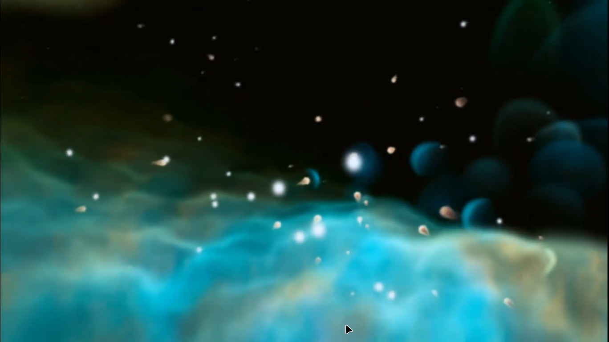
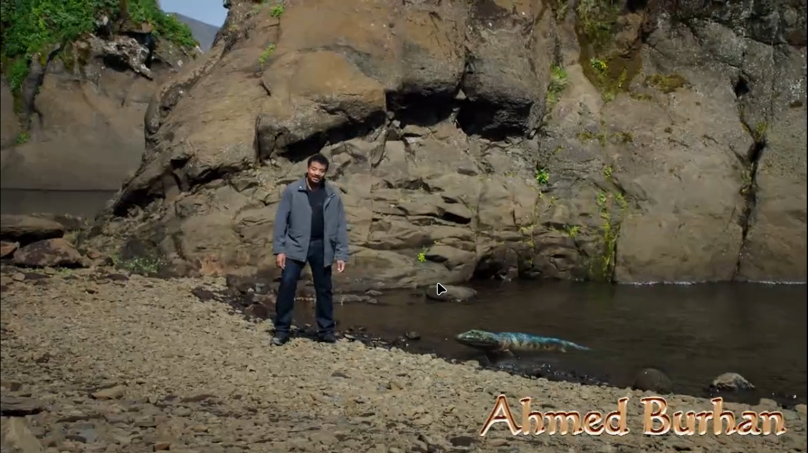
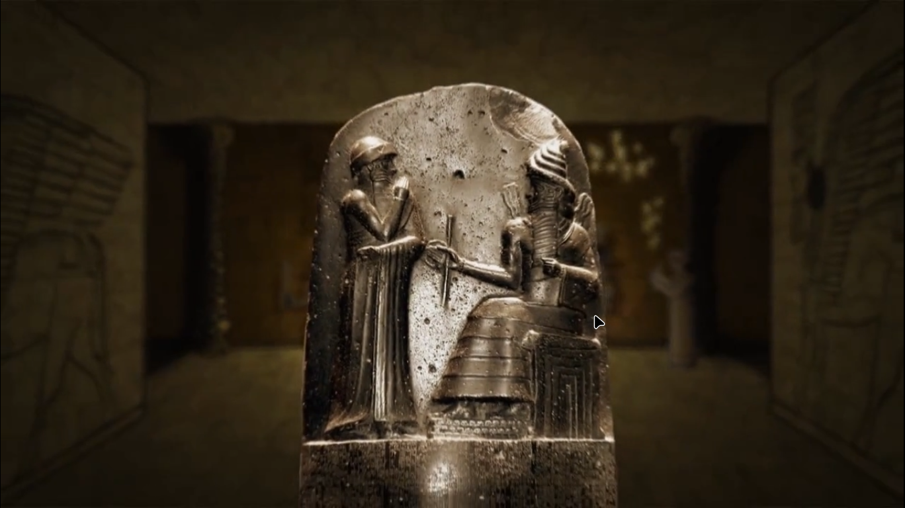

Scientific method : same over centuries
1.Test any new idea
2.move ahead with successfull ideas
3.leave behind the failed idea
4.Wherever evidence leads go there
5.asks questions constantly
--lacks any significant atmosphere, hydrosphere, or magnetic field.
--Its surface gravity is about one-sixth of Earth's at 0.1654 g,
REASON FOR NOT HAVING WATER : The Moon, having no magnetic field, and also having no atmosphere, has no protection for its water, and no way of catching any of the water which evaporates under the heat of the light from the Sun .
Cosmic Address
ROGUE PLANET : (also termed a free-floating planet (FFP), interstellar, nomad, orphan, starless, unbound or wandering planet) is an interstellar object of planetary mass which is not gravitationally bound to any star or brown dwarf.
VIRGO SUPER CLUSTER : Every dot is a galaxy
Our Cosmic Address
MULTIVERSE : is the hypothetical set of all universes. Together, these universes are presumed to comprise everything that exists: the entirety of space, time, matter, energy, information, and the physical laws and constants that describe them.
Nicolaus Copernicus [1473-1543]: was a Renaissance polymath, active as a mathematician, astronomer, and Catholic canon, who formulated a model of the universe that placed the Sun rather than Earth at its center.
before : Nicolaus Copernicus : earth is at the center of the solar system

Giordano Bruno[ 1548-1600] :(had no proof) he suggested that the universe may be infinite and populated with many worlds and that all religions should peacefully coexist
after decades of torture He was burnt alive by the italian church ,10 years later Galileo Galilei observed same thing through his telescope
If we convert entire history of universe into a single calender year
Age of universe : 13.7 billion years old
Each month in our calender is roughly 100 crore ,each day is 4 crore
1 JAN : BIG BANG :this universe is created from a particle smaller then an atom
an explosion happened ,fireballs continously expanded ,due to this all the matter and energy is created that is present today
universe cooled till 20cr year there was darkness
Due to gravity gas clouds gathered ,and heated
10 JAN first star were created
13 JAN first these starts formed the first small galaxy , these small galaxy grouped to form large galaxy
15 MAR Our milky way galaxy is formed ,this has many many suns , our sun is not created yet ,it will get created from the ashes of some other star
This flash light is SUPER NOVA : when a big star shines while dying
STELER NURSERY : where stars die and born
Just like gas and dust particle form water droplets ,same as these stars are formed , they became so heated that they particles combined(this oxygen(breathing) ,carbon(muscles) ,calcium(bones) ,iron(blood) (way back these elements we formed in stars(we are are made from the things formed in the stars)))
All these things in stars are continously recycling : stars born and die
31 AUGUSTOur sun is born : Our earth is created from the dust and gas particles surrounded near sun(thes particles/rocks kept smashsing each other and our moon is created)
When earth cooled ,oceans started forming ,oceans waves were 1000X higher then ,these waves we constantly colliding and moon gone a bit farther .
21 SEPTEMBER Life started on earth (how it started is still a unsolved mystery)
Due to combining of different types of bio-chemical many many types of life started forming
TILL 9 NOV LIFE started to learn breathing,walking,eating,adaptation,sex(repproduction) in their surrounding
TILL 17 DEC Life was very rich in oceans variety of plants and animals
Tiktaalik : can out of water
Tiktaalik, or a fish like it, is our ancestor but not just ours, that of all tetrapods: kangaroos, woolly mammoths, and even snakes and velociraptors.
DEC LAST WEEK jungles , dinasaur,brids,insects were made
28 DEC First flower blossomed
At that time tree groven and dies and the burred tree became coal
30 DEC 6:24 AM asteroid hit the earth and dinasaur gone extinct , if that asteroid din't hit earth then now dinasaur would have been around now ,not humans
31 DEC last hour Humans came around in the earth
last 14 seconds
-35 Lakh years ago Our ancestor's left this footprints : they stood of 2 feets , now our eyes are not just fixed to lands , now we can see and think about sky
from there till 40K generations we were hunter gatherers , we moved from one place to another
Then we formed goup and started hunting in groups ,tool making,control fire,naming things
-30K years ago humans made their first paintings
We invented Astronomy , all our ancestor were astronomers
Astronomy is the study of everything in the universe beyond Earth's atmosphere
for our lives : It was important for us that we can read stars ,so that we can anticipate winter, and comming and going of heards of animals
-10K years big changes were happed in the way of living , our ancestors learnt to manipulate environment ,control animals plants ,farming{living in one place} started,,,this changed everything {In the first time in our history we had more than we needed } ,,,
We got the need to maintain rocords of those goods
-6K years We learnt to write

Due to writing we became able to store and spread our thoughts ,to others ,to next generations
We made ourselves immortal through statues
this changed everthing
last 4 centuries Due to scientific method we have gone from looking into the space using Galileo[1564-1642]'s telescope to actually setting foot on moon .